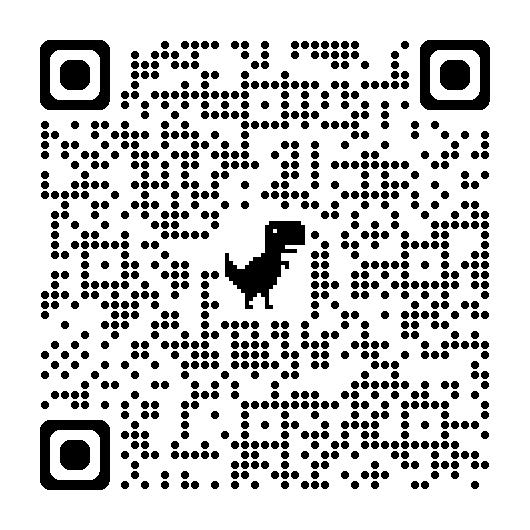
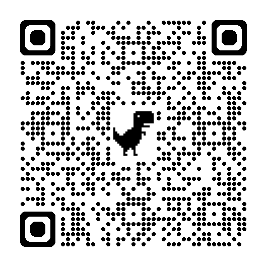

Googleフォームは「アンケート」だけじゃない
回答する → 集計を見る → スプレッドシート → 仕組みを知る → 自分で作る
Googleフォームを理解する一番の近道は、まず自分で使ってみることです。今日はまず「クイズに挑戦する」ところから始めて、そのあと「説明を聞く」のではなく、回答者 → 作成者の順番でGoogleフォームの基本を体験します。
導入
まずは3問。Googleクイズに挑戦！
Googleフォームは、アンケートを集めるだけのツールではありません。問題を出題し、回答を確認するクイズ教材としても活用できます。今回のクイズは、正解・不正解を確認するだけでなく、回答後に「なぜそうなるのか」という解説も読めるようにしています。
問題を解く
arrow_downward
答えを確認する
arrow_downward
解説を読む
arrow_downward
もう一度考える
先生がその場で一問ずつ解説しなくても、生徒が自分のペースでこの流れを繰り返せます。Googleフォームは「テストする道具」だけではなく、「自分で復習できる教材」としても活用できます。
PC・Surfaceで見ている方
スマホでQRコードを読み取ってください。

※このクイズは、このあとSTEP 1で使うアンケートとは別のフォームです。
Googleフォームなら、こんな教材も作れます
選択式の問題
画像を使った問題
複数選択問題
正解・不正解の確認
問題ごとの解説
生徒自身による復習
auto_stories
大切なのは「採点できること」より、「解説を付けられること」です。問題と解説をセットにすることで、生徒が一人でも復習できる教材をGoogleフォームで作れます。
発展
こんなクイズ、自分で作るのは大変？
Briskを使える環境なら、教材作成をさらに効率化できます。
YouTube・Webページ・教材
arrow_downward
Brisk
arrow_downward
クイズ生成
arrow_downward
Googleフォーム
warning
今回の研修で使用する県域教育アカウントではBriskを利用できないため、今日の演習ではBriskを使用しません。
home
自宅で試してみよう｜Brisk
今日体験したようなGoogleクイズを、もっと短時間で作りたい方へ。Briskを利用できる個人アカウント等の環境では、YouTubeやWeb教材からクイズを生成し、Googleフォームへ展開する方法もあります。研修後、自宅でぜひ試してみてください。
※利用可否はアカウントや組織の設定によって異なります。
Session 3 本編
今日は、Googleフォームの基本を体験します。
クイズのような教材も作れますが、まずはGoogleフォームの基本から。今日は講師が用意した簡単なフォームを使って、回答する→集計を見る→スプレッドシートとの連携を知る→仕組みを知る→自分で作る、という5つのステップを体験します。
この講座でできるようになること
- check_circleGoogleフォームがアンケート以外にも使えることを知る
- check_circle回答がリアルタイムで自動集計されることを見る
- check_circle回答がスプレッドシートに蓄積できることを知る
- check_circle質問・選択肢・必須回答など、Googleフォームの仕組みを知る
- check_circle自分で簡単なフォームを1つ作れるようになる
基本の流れ
回答する
arrow_downward
集計を見る
arrow_downward
スプレッドシートとの連携を知る
arrow_downward
仕組みを知る
arrow_downward
自分で作る
STEP 1
まずは、回答者になってみよう
講師が事前に作成したGoogleフォームのアンケートに、先生方自身が回答します。Surface Go 2またはスマートフォンから回答できます。ここではGoogleフォームの作り方は説明しません。まずは「回答する側から見ると、Googleフォームはこう見える」ことを体験してください。
PCで見ている方
QRコードをスマホで読み取って回答してください。

info
ここで回答するのは「今、一番時間がとられていると感じる校務は？」というアンケートです。冒頭のGoogleクイズとは別のフォームです。
STEP 2
回答した瞬間、集計は始まっています
先生方が回答した直後に、講師がGoogleフォームの「回答」画面を提示します。回答数・自動生成されたグラフ・回答割合を、その場で確認します。
回答
arrow_downward
自動集計
arrow_downward
グラフ
Message
今、誰も集計作業をしていません。
回答された瞬間から、Googleフォームが自動で集計しています。
bolt
円グラフ・棒グラフ・回答割合が、リアルタイムに自動的に集計されていく様子をその場で確認できます。操作は必要ありません。授業振り返りや理解度確認、行事アンケートなど、日々の校務でも同じように使えます。
STEP 3
回答をスプレッドシートに蓄積する
Googleフォームの「回答」タブから「スプレッドシートにリンク」を選ぶだけで、回答データがGoogleスプレッドシートへ自動的に蓄積されていく様子を、講師が実演します。
回答
arrow_downward
スプレッドシートにリンク
arrow_downward
一覧データとして蓄積
table_chart
ここでは詳しい操作は扱いません。「フォームとスプレッドシートがつながる」ことを知ってもらえれば十分です。
STEP 4
STEP 1のフォームの「裏側」を見てみよう
先ほどSTEP 1で回答したGoogleフォームを、作成者側の編集画面から見せます。「回答者として見たフォーム」と「作成者として見たフォーム」をつなげて理解しましょう。すべての機能を説明する必要はありません。次の機能だけを簡単に確認します。
質問を追加
質問形式
選択肢
必須回答
プレビュー
回答タブ
celebration
全部覚える必要はありません。まずは「質問を作る → 回答してもらう → 集計を見る」これだけで十分です。
STEP 5
3問だけ、自分で作ってみよう
ここでは先生方自身がGoogleフォームを作成します。複雑なフォームは作りません。テーマは「明日、学校で使えそうな3問フォーム」。タイトル＋3問で完成とします。
授業振り返り
理解度確認
小テスト
進路希望調査
面談希望
行事アンケート
職員アンケート
研修アンケート
出欠確認
簡単な確認問題
-
1
Googleフォームを開く
forms.google.comまたはGoogleアプリ一覧から開きます。
-
2
「空白のフォーム」を選ぶ
テンプレートは使わず、白紙から始めます。
-
3
タイトルを入力する
フォームの名前をつけます（例：〇〇講座 振り返り）。
-
4
-
5
プレビューして自分で回答する
右上のプレビュー（目のアイコン）から確認します。
-
6
「回答」タブから結果を見る
自分の回答が集計されているか確認します。
よくあるトラブル
いいえ、別のフォームです。冒頭のGoogleクイズは「Googleフォームを教材として使う体験」、STEP 1の「今、一番時間がとられていると感じる校務は？」は「Googleフォームの基本と集計を学ぶための演習」です。
周囲が暗い、画面が反射している場合はうまく読み取れないことがあります。画面の明るさを上げる、またはスマホ・タブレットの方はボタンを直接お使いください。
県域教育アカウントでログインしているかご確認ください。改善しない場合は、情報担当・管理職にご相談ください。
個人のGoogleアカウントでログインしているかご確認ください。県域教育アカウントでは利用できません。改善しない場合は拡張機能を一度削除し、再度追加をお試しください。
Message
まず自分で使って、仕組みを知る。
その上でAIを使えば、もっと簡単になる。
Googleフォームの操作を覚えることだけが目的ではありません。大切なのは、「何を聞くのか」「何を確かめたいのか」「集めた回答をどう授業に生かすのか」を先生が考えることです。